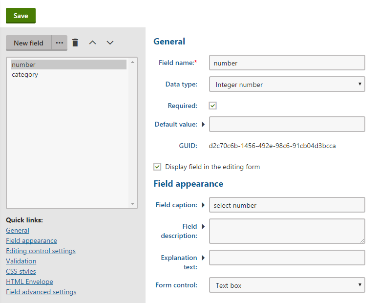

Adding a discount rule with a custom method
Catalog discounts, order discounts, free shipping offers and gift cards provide the option of setting conditions, which limit how the given discount or offer is applied. The conditions can be built using a pre-defined set of rules. However, you can also add new rules so that store managers can offer discounts just as they want them. You can learn more basic information about adding new discount rules in Configuring discount rules.
This page describes how to add discount rules that use a custom macro method, which developers define in the system's code. You can then create discount rules that call the custom method, and use them in the conditions of catalog discounts, order discounts, free shipping offers or gift cards.
To create a discount rule (both order and catalog rules) that calls a custom method, you need to:
Open your Kentico solution in Visual Studio.
Create a new class that inherits from the MacroMethodContainer class.
Class location
For production sites, we recommend creating a new assembly (Class library project) in your Kentico solution and including the macro container there. You need to add the appropriate references to both the assembly and the main Kentico web project. For more information, refer to Best practices for customization.
Register the custom macro container for specific data types or macro namespaces using the RegisterExtension attribute.
For order rulesusing CMS;using CMS.Ecommerce;using CMS.MacroEngine;[assembly: RegisterExtension(typeof(CustomOrderRuleMacroMethods ), typeof(CalculatorData))]publicclassCustomOrderRuleMacroMethods : MacroMethodContainer{}For catalog rulesusing CMS;using CMS.Ecommerce;using CMS.MacroEngine;[assembly: RegisterExtension(typeof(CustomCatalogRuleMacroMethods ), typeof(SKUInfo))]publicclassCustomCatalogRuleMacroMethods : MacroMethodContainer{}Save the files (and build your custom class library project).
Sign in to the Kentico administration interface and create a discount rule using the custom macro methods.
Your store managers can now limit discounts and offers using the added discount rule. When evaluating conditions based on the rule, the system calls the created custom macro method.
Example – Adding a rule that checks product categories
The following example demonstrates how to add an order rule with a macro condition that calls a custom method. The custom discount rule checks whether products in the evaluated shopping cart or order belong to a specific page category. You can specify a minimum number of product units that must belong to the page category to be eligible for the discount.
Stand-alone SKUs
Even though the principle is the same, this specific example does not work for stand-alone SKUs. Page categories are available only for products that combine an SKU object and a page (the default approach in Kentico).
To create a discount rule that checks a product's category:
Creating a macro method container class
Prepare a separate project for custom classes in your Kentico solution:
Open your Kentico solution in Visual Studio.
Create a new Class Library project in the Kentico solution (or reuse an existing custom project).
Add references to the required Kentico libraries (DLLs) for the new project:
Right-click the project and select Add -> Reference.
Select the Browse tab of the Reference manager dialog, click Browse and navigate to the Lib folder of your Kentico web project.
Add references to the following libraries:
CMS.Base.dll
CMS.Core.dll
CMS.DataEngine.dll
CMS.DocumentEngine.dll
CMS.Ecommerce.dll
CMS.Helpers.dll
CMS.MacroEngine.dll
Reference the custom project from the Kentico web project (CMSApp or CMS).
Edit the custom project's AssemblyInfo.cs file (in the Properties folder).
Add the AssemblyDiscoverable assembly attribute:
usingCMS;[assembly:AssemblyDiscoverable]
Continue by creating the macro method container class:
Create a new class named CustomEcommerceMacroMethods under the custom project.
Add the following code to the class:
usingSystem;usingSystem.Collections.Generic;usingSystem.Linq;usingCMS;usingCMS.DocumentEngine;usingCMS.Ecommerce;usingCMS.Helpers;usingCMS.MacroEngine;[assembly: RegisterExtension(typeof(CustomEcommerceMacroMethods),typeof(CalculatorData))]publicclassCustomEcommerceMacroMethods : MacroMethodContainer{/// <summary>/// Returns a true value if the shopping cart / order data contains at least the specified number of product units in the specified category./// </summary>[MacroMethod(typeof(bool),"Returns a true value if the shopping cart / order data contains at least the specified number of product units in the specified category.", 3)][MacroMethodParam(0,"data",typeof(CalculatorData),"Shopping cart / order calculation data")][MacroMethodParam(1,"categoryName",typeof(string),"The name of a page category")][MacroMethodParam(2,"itemsCount",typeof(int),"The required number of product units")]publicstaticobjectContainsProductsInCategory(EvaluationContext context,paramsobject[] parameters){switch(parameters.Length){case3:returnContainsProductsInCategory(parameters);default:thrownewNotSupportedException();}}privatestaticboolContainsProductsInCategory(object[] parameters){// Gets the shopping cart calculation dataCalculatorData data = (CalculatorData)parameters[0];// Gets the page category that is checkedstringcategoryName = ValidationHelper.GetString(parameters[1], String.Empty);// Gets the minimum required number of product unitsintminItemsCount = ValidationHelper.GetInteger(parameters[2], 1);// Gets the IDs of SKUs (products) in the shopping cart / orderList<int> itemIds = data.Request.Items// Filters out product options.Where(item => !(item.SKU.IsProductOption))// Ensures selection of the ID for both standard products and variants.Select<CalculationRequestItem,int>(item => item.SKU.IsProductVariant ? item.SKU.SKUParentSKUID : item.SKU.SKUID).ToList();// Gets the IDs of all related product pages that belong to the specified categoryList<TreeNode> pages = DocumentHelper.GetDocuments().OnCurrentSite().InCategories(categoryName).WhereIn("NodeSKUID", itemIds).Columns("NodeSKUID").ToList();// Counts the total number of product units that belong to the specified categoryintcount = 0;foreach(CalculationRequestItem itemindata.Request.Items){// Gets the ID of standard products or the main product's ID for variantsintitemId = item.SKU.IsProductVariant ? item.SKU.SKUParentSKUID : item.SKU.SKUID;// Increases the count by the number of units if the product ID matches one of the pages with the specified categoryif(pages.Exists(doc => doc.NodeSKUID == itemId)){count += (int)item.Quantity;}}// Returns a true value if the count is higher than or equal to the required minimumreturn(minItemsCount <= count);}}Save all changes and Build the custom project.
The system now provides the custom ContainsProductsInCategory macro method for objects of the CalculatorData type (the CalculatorData is available within the context of order discount rules).
Adding an order rule
Follow the steps below to create an order discount macro rule that enables discounts for customers whose order contains at least a specified number of product units belonging to a selected page category.
Open the Store configuration application if you want to create an order rule for the current site. Open the Multistore configuration application if you run multiple sites on the same Kentico instance and you want to add the rule for all the sites.
If you are not sure what to choose, see Choosing site or global e-commerce configuration. If you are not sure about specifics of configuring in these applications, see Configuring e-commerce settings for a specific site or globally.
Switch to the Discount rules -> Order rules tab.
Click New order rule.
The system opens a new page where you can specify the order rule properties and define the rule's parameters.
Enter the following values for the rule's properties:
Display name: Order contains products from a category
User text: The order contains at least {number} products from the {category} category
Condition: Data.ContainsProductsInCategory("{category}", {number})
Notice that the ContainsProductsInCategory macro method defined in the custom code is now used in the order rule's condition.
Click Save.
Define the rule's parameters:
Switch to the Parameters tab.
You specified two parameters that modify the rule's condition (number and category). The system adds them automatically. You can now adjust the parameters' settings.
Select number in the left panel and set the following properties:
Field name: number
Data type: Integer number
Required: Yes (selected)
Display field in the editing form: Yes (selected)
Field caption: select number
Form control: Text box

Specifying parameter properties
Click Save.
Select category in the left panel and set the following properties:
Field name: category
Data type: Text
Required: Yes (selected)
Display field in the editing form: Yes (selected)
Field caption: select category
Form control: Category selector (select via the (more items...) option)
Display personal categories: No (cleared)
Display general categories: Yes (selected)
Click Save.
The custom order rule with two parameters is now ready. You can create or edit order discounts, free shipping offers and gift cards with conditions based on the new rule.